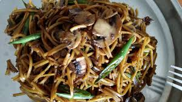

Homemade Chowmein

Description
This homemade chowmein is a simple yet flavorful Indo-Chinese dish, packed
with vegetables and tossed in a savory sauce. It's quick to make and
perfect for lunch or dinner.
Inspired by Indian street-style noodles, this version balances spice,
sweetness, and umami with minimal ingredients and maximum taste.
Ingredients
- 150g noodles (boiled and drained)
- 1 tablespoon oil
- 1/2 cup sliced onions
- 1/2 cup julienned carrots
- 1/2 cup shredded cabbage
- 1/2 teaspoon ginger-garlic paste
- 2 tablespoons soy sauce
- 1 tablespoon green chili sauce (optional)
- 1 teaspoon vinegar
- Salt and pepper to taste
Steps
-
Boil noodles until al dente, drain, and toss with a little oil to
prevent sticking.
-
Heat oil in a wok or pan. Add ginger-garlic paste and sauté briefly.
-
Add onions, carrots, and cabbage. Stir-fry on high heat for 2–3 minutes.
- Add soy sauce, chili sauce, and vinegar. Mix well.
-
Add the boiled noodles and toss everything together until well coated.
- Season with salt and pepper. Serve hot.
home page